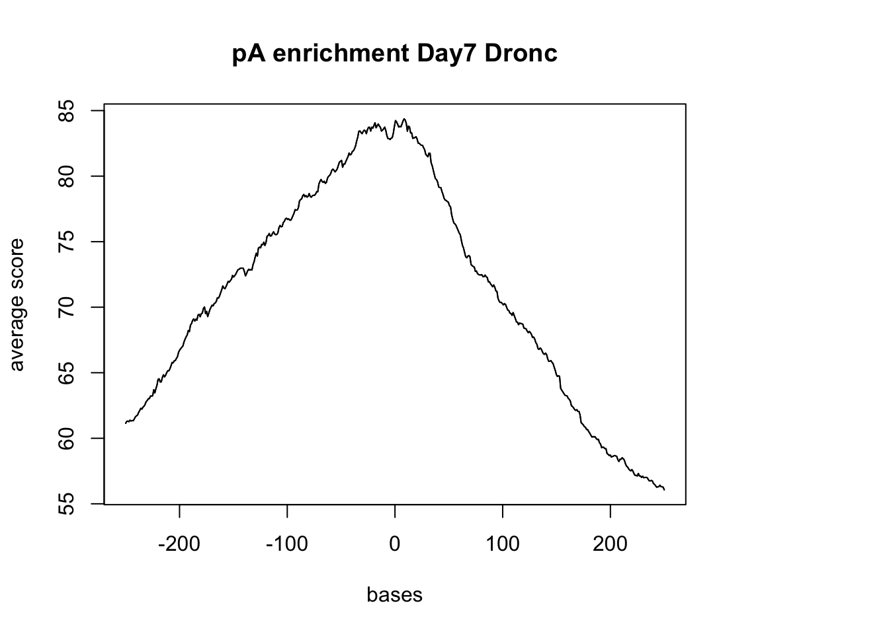

3` UTR analysis
Briana Mittleman
2018-01-24
Last updated: 2018-01-25
Code version: 4475b30
I have a file with the 3` UTRs and I want to extract coverage from the drop and dronc seq bam files that are in these UTR regions.
I will use:
- bedtools coverage -d -a /project2/gilad/spott/dropBams/Day7_cardiomyocytes_drop_seq.bam -b /project2/gilad/briana/apa_sites/three_prime_utr.bed > drop7_cardio_3utr.txt
Alternative anaylsis: Try to look at this similar to how I looked at the TSS enrichment.
Step 1: Download drop and dronc seq bam/ index files to my computer in the netseq data file.
clusters.hg38
Day7_cardiomyocytes_drop_seq.bam
Day7_cardiomyocytes_drop_seq.bam.bai
three_prime_utr.bed
Step 2: Pull in packages and data for analysis:
#get reads
reads <- readGAlignments(file = "../data/Day7_cardiomyocytes_drop_seq.bam", index="../data/Day7_cardiomyocytes_drop_seq.bam.bai")
reads.GR <- granges(reads)
UTR=readGeneric("../data/three_prime_utr.bed")
pAsite= readGeneric("../data/clusters.hg38.bed")#resize so I am looking 10,000 up and downstream of the center of the UTR
UTR %<>% resize(., width=10000, fix="center")
(UTR_width= summary(width(UTR))) Min. 1st Qu. Median Mean 3rd Qu. Max.
10000 10000 10000 10000 10000 10000 sm <- ScoreMatrixBin(target = reads.GR, windows = UTR, bin.num = 100, bin.op = "mean") Warning in .local(target, windows, bin.num, bin.op, strand.aware): 5723
windows fall off the targetplotMeta(sm)Do this against the pAsites:
(pAs_width= summary(width(pAsite))) Min. 1st Qu. Median Mean 3rd Qu. Max.
2.00 8.00 13.00 13.13 18.00 61.00 #look 200 up and down stream of each
pAsite %<>% resize(., width=500, fix="center")
(pAs_width2= summary(width(pAsite))) Min. 1st Qu. Median Mean 3rd Qu. Max.
500 500 500 500 500 500 sm_pA <- ScoreMatrixBin(target = reads.GR, windows = pAsite, bin.num = 500, bin.op = "mean")Warning in .local(target, windows, bin.num, bin.op, strand.aware): 10
windows fall off the targetplotMeta(sm_pA, xcoords = c(-250,250), main="pA enrichment Day7 Drop")Try with the Dronc seq data:
dronc_reads <- readGAlignments(file = "../data/Day7_cardiomyocytes_droNC_seq.bam", index="../data/Day7_cardiomyocytes_droNC_seq.bam.bai")
dronc_reads.GR <- granges(dronc_reads)
dronc_sm_pA <- ScoreMatrixBin(target =dronc_reads.GR, windows = pAsite, bin.num = 500, bin.op = "mean")Warning in .local(target, windows, bin.num, bin.op, strand.aware): 10
windows fall off the targetplotMeta(dronc_sm_pA, xcoords = c(-250,250), main="pA enrichment Day7 Dronc")Compare this result to the 3` seq data :
- LCL
LCL_reads <- readGAlignments(file = "../data/blcl.hg38.sorted.bam", index="../data/blcl.hg38.sorted.bam.bai")
LCL_reads.GR <- granges(LCL_reads)
sm_LCL_pA <- ScoreMatrixBin(target = LCL_reads.GR, windows = pAsite, bin.num = 500, bin.op = "mean")
plotMeta(sm_LCL_pA, xcoords = c(-250,250), main="pA enrichment LCL")
- hES
hES_reads <- readGAlignments(file = "../data/hES.hg38.sorted.bam", index="../data/hES.hg38.sorted.bam.bai")
hES_reads.GR <- granges(hES_reads)
sm_hES_pA <- ScoreMatrixBin(target = hES_reads.GR, windows = pAsite, bin.num = 500, bin.op = "mean")
plotMeta(sm_hES_pA, xcoords = c(-250,250), main="pA enrichment hES") 
Session information
sessionInfo()R version 3.4.2 (2017-09-28)
Platform: x86_64-apple-darwin15.6.0 (64-bit)
Running under: macOS Sierra 10.12.6
Matrix products: default
BLAS: /Library/Frameworks/R.framework/Versions/3.4/Resources/lib/libRblas.0.dylib
LAPACK: /Library/Frameworks/R.framework/Versions/3.4/Resources/lib/libRlapack.dylib
locale:
[1] en_US.UTF-8/en_US.UTF-8/en_US.UTF-8/C/en_US.UTF-8/en_US.UTF-8
attached base packages:
[1] grid stats4 parallel stats graphics grDevices utils
[8] datasets methods base
other attached packages:
[1] GenomicAlignments_1.14.1 Rsamtools_1.30.0
[3] Biostrings_2.46.0 XVector_0.18.0
[5] SummarizedExperiment_1.8.1 DelayedArray_0.4.1
[7] matrixStats_0.53.0 Biobase_2.38.0
[9] BiocInstaller_1.28.0 magrittr_1.5
[11] data.table_1.10.4-3 genomation_1.10.0
[13] dplyr_0.7.4 GenomicRanges_1.30.1
[15] GenomeInfoDb_1.14.0 IRanges_2.12.0
[17] S4Vectors_0.16.0 BiocGenerics_0.24.0
loaded via a namespace (and not attached):
[1] reshape2_1.4.3 lattice_0.20-35 seqPattern_1.10.0
[4] colorspace_1.3-2 htmltools_0.3.6 rtracklayer_1.38.3
[7] yaml_2.1.16 XML_3.98-1.9 rlang_0.1.6
[10] pillar_1.1.0 glue_1.2.0 BiocParallel_1.12.0
[13] bindrcpp_0.2 GenomeInfoDbData_1.0.0 bindr_0.1
[16] plyr_1.8.4 stringr_1.2.0 zlibbioc_1.24.0
[19] munsell_0.4.3 gtable_0.2.0 evaluate_0.10.1
[22] knitr_1.18 Rcpp_0.12.15 KernSmooth_2.23-15
[25] readr_1.1.1 backports_1.1.2 scales_0.5.0
[28] BSgenome_1.46.0 plotrix_3.7 impute_1.52.0
[31] hms_0.4.1 ggplot2_2.2.1 digest_0.6.14
[34] stringi_1.1.6 rprojroot_1.3-2 tools_3.4.2
[37] bitops_1.0-6 RCurl_1.95-4.10 lazyeval_0.2.1
[40] tibble_1.4.2 pkgconfig_2.0.1 Matrix_1.2-12
[43] gridBase_0.4-7 assertthat_0.2.0 rmarkdown_1.8.5
[46] R6_2.2.2 git2r_0.21.0 compiler_3.4.2 This R Markdown site was created with workflowr